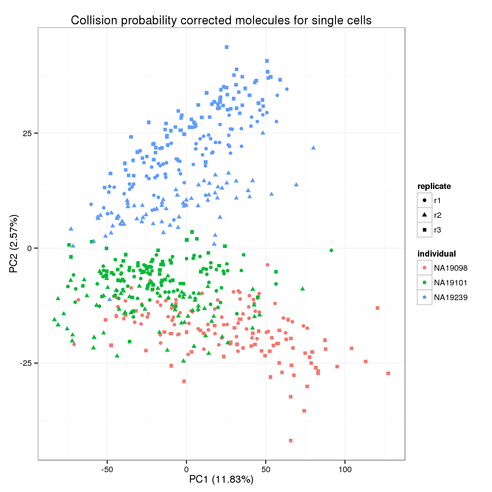
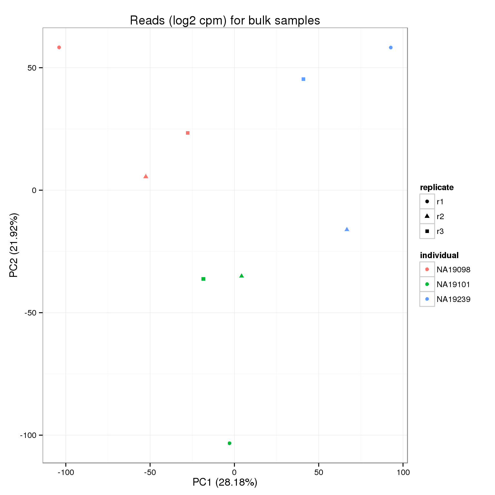
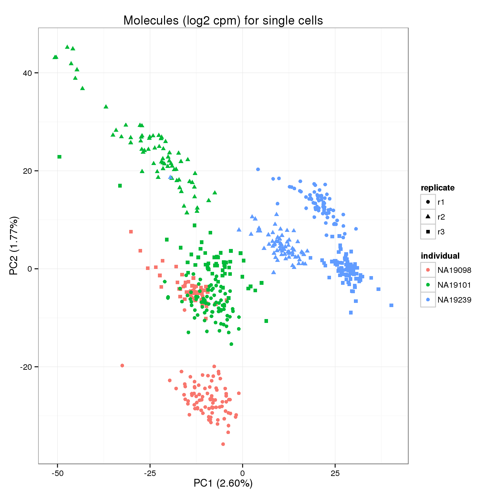

Last updated: 2016-01-23
Code version: 71bca2eedc500d1e5da32d526ba2127cb9aa7a63
library("dplyr")
library("limma")
library("edgeR")
library("ggplot2")
theme_set(theme_bw(base_size = 12))
source("functions.R")This file standardizes the counts to the log2 counts per million (cpm). The endogenous genes and ERCC controls are standardized separately because the same number of ERCC controls are spiked into each sample.
The reads for the bulk samples are processed as in traditional RNA-seq. On the other hand, the single cell samples are processed differently. First, only their molecule counts are standardized. Second, the molecule counts are adjusted to account for the collision probability before standardization.
Creates the following files:
Input filtered annotation.
anno_filter <- read.table("../data/annotation-filter.txt", header = TRUE,
stringsAsFactors = FALSE)
head(anno_filter) individual replicate well batch sample_id
1 NA19098 r1 A01 NA19098.r1 NA19098.r1.A01
2 NA19098 r1 A02 NA19098.r1 NA19098.r1.A02
3 NA19098 r1 A04 NA19098.r1 NA19098.r1.A04
4 NA19098 r1 A05 NA19098.r1 NA19098.r1.A05
5 NA19098 r1 A06 NA19098.r1 NA19098.r1.A06
6 NA19098 r1 A07 NA19098.r1 NA19098.r1.A07Input filtered read counts.
reads_filter <- read.table("../data/reads-filter.txt", header = TRUE,
stringsAsFactors = FALSE)
stopifnot(ncol(reads_filter) == nrow(anno_filter),
colnames(reads_filter) == anno_filter$sample_id)Input filtered molecule counts.
molecules_filter <- read.table("../data/molecules-filter.txt", header = TRUE,
stringsAsFactors = FALSE)
stopifnot(ncol(molecules_filter) == nrow(anno_filter),
colnames(molecules_filter) == anno_filter$sample_id)Input filtered read counts for bulk samples.
reads_bulk_filter <- read.table("../data/reads-bulk-filter.txt", header = TRUE,
stringsAsFactors = FALSE)
stopifnot(ncol(reads_bulk_filter) == 9)Input annotation for bulk samples.
anno_bulk <- read.table("../data/annotation-bulk.txt", header = TRUE,
stringsAsFactors = FALSE)
head(anno_bulk) individual replicate well batch sample_id
1 NA19098 r1 bulk NA19098.r1 NA19098.r1.bulk
2 NA19098 r2 bulk NA19098.r2 NA19098.r2.bulk
3 NA19098 r3 bulk NA19098.r3 NA19098.r3.bulk
4 NA19101 r1 bulk NA19101.r1 NA19101.r1.bulk
5 NA19101 r2 bulk NA19101.r2 NA19101.r2.bulk
6 NA19101 r3 bulk NA19101.r3 NA19101.r3.bulkDue to the stochasticity of the sampling process, not all molecules will be tagged with a UMI and sequenced. We correct for this “collision probability” following the method applied in Grun et al. 2014.
molecules_collision <- -1024 * log(1 - molecules_filter / 1024)pca_molecules_collision <- run_pca(molecules_collision)
pca_molecules_collision_plot <- plot_pca(pca_molecules_collision$PCs, explained = pca_molecules_collision$explained,
metadata = anno_filter, color = "individual",
shape = "replicate") +
labs(title = "Collision probability corrected molecules for single cells")
pca_molecules_collision_plot
We calculate the log2 counts per million (cpm) separately for the endogenous and ERCC genes.
ercc_rows <- grepl("ERCC", rownames(reads_bulk_filter))reads_bulk_cpm <- cpm(reads_bulk_filter[!ercc_rows, ], log = TRUE)
write.table(round(reads_bulk_cpm, digits = 6), "../data/reads-bulk-cpm.txt", quote = FALSE,
sep = "\t", col.names = NA)pca_reads_bulk_cpm <- run_pca(reads_bulk_cpm)
pca_reads_bulk_cpm_plot <- plot_pca(pca_reads_bulk_cpm$PCs, explained = pca_reads_bulk_cpm$explained,
metadata = anno_bulk, color = "individual",
shape = "replicate") +
labs(title = "Reads (log2 cpm) for bulk samples")
pca_reads_bulk_cpm_plot
reads_bulk_cpm_ercc <- cpm(reads_bulk_filter[ercc_rows, ], log = TRUE)
write.table(round(reads_bulk_cpm_ercc, digits = 6), "../data/reads-bulk-cpm-ercc.txt", quote = FALSE,
sep = "\t", col.names = NA)molecules_cpm <- cpm(molecules_collision[!ercc_rows, ], log = TRUE)
write.table(round(molecules_cpm, digits = 6), "../data/molecules-cpm.txt", quote = FALSE,
sep = "\t", col.names = NA)pca_molecules_cpm <- run_pca(molecules_cpm)
pca_molecules_cpm_plot <- plot_pca(pca_molecules_cpm$PCs, explained = pca_molecules_cpm$explained,
metadata = anno_filter, color = "individual",
shape = "replicate") +
labs(title = "Molecules (log2 cpm) for single cells")
pca_molecules_cpm_plot
molecules_cpm_ercc <- cpm(molecules_collision[ercc_rows, ], log = TRUE)
write.table(round(molecules_cpm_ercc, digits = 6), "../data/molecules-cpm-ercc.txt", quote = FALSE,
sep = "\t", col.names = NA)sessionInfo()R version 3.2.0 (2015-04-16)
Platform: x86_64-unknown-linux-gnu (64-bit)
locale:
[1] LC_CTYPE=en_US.UTF-8 LC_NUMERIC=C
[3] LC_TIME=en_US.UTF-8 LC_COLLATE=en_US.UTF-8
[5] LC_MONETARY=en_US.UTF-8 LC_MESSAGES=en_US.UTF-8
[7] LC_PAPER=en_US.UTF-8 LC_NAME=C
[9] LC_ADDRESS=C LC_TELEPHONE=C
[11] LC_MEASUREMENT=en_US.UTF-8 LC_IDENTIFICATION=C
attached base packages:
[1] stats graphics grDevices utils datasets methods base
other attached packages:
[1] testit_0.4 ggplot2_1.0.1 edgeR_3.10.2 limma_3.24.9 dplyr_0.4.2
[6] knitr_1.10.5
loaded via a namespace (and not attached):
[1] Rcpp_0.12.0 magrittr_1.5 MASS_7.3-40 munsell_0.4.2
[5] colorspace_1.2-6 R6_2.1.1 stringr_1.0.0 httr_0.6.1
[9] plyr_1.8.3 tools_3.2.0 parallel_3.2.0 grid_3.2.0
[13] gtable_0.1.2 DBI_0.3.1 htmltools_0.2.6 yaml_2.1.13
[17] assertthat_0.1 digest_0.6.8 reshape2_1.4.1 formatR_1.2
[21] bitops_1.0-6 RCurl_1.95-4.6 evaluate_0.7 rmarkdown_0.6.1
[25] labeling_0.3 stringi_0.4-1 scales_0.2.4 proto_0.3-10